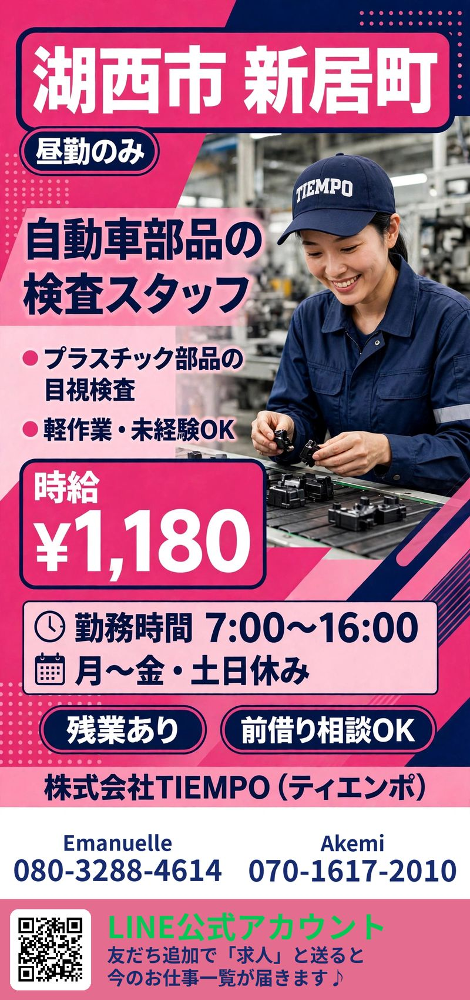
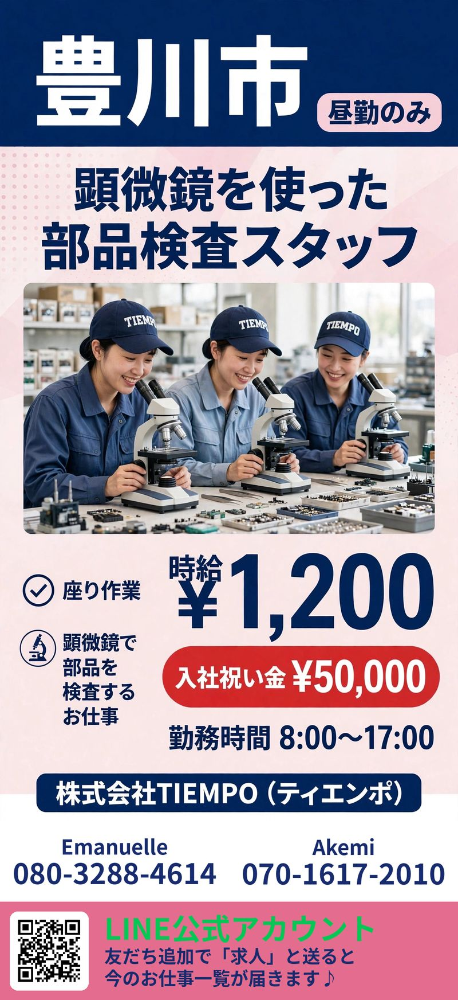

豊橋市・豊川市・湖西市・浜松市・磐田市・新城市・蒲郡市・掛川市
NOW HIRING ― 7 JOBS

自動車用プラスチック部品の検査。軽作業で未経験歓迎。女性スタッフが多く活躍している職場です。

顕微鏡を使った部品の検査。落ち着いた環境の座り仕事です。女性スタッフが多く活躍している職場です。
自動車部品の仕分け・ピッキング作業。土曜出勤の場合あり。男性スタッフが多く活躍している職場です。
熱処理後の部品の準備と関連作業。男性スタッフが多く活躍している職場です。
自動旋盤ラインで部品の測定・検査を行うお仕事です。男性スタッフが多く活躍している職場です。
NC旋盤オペレーターのお仕事です。交代制で、1週間は昼勤、1週間は夜勤です。男性スタッフが多く活躍している職場です。
小さな部品を掛ける軽作業です。男性スタッフが多く活躍している職場です。